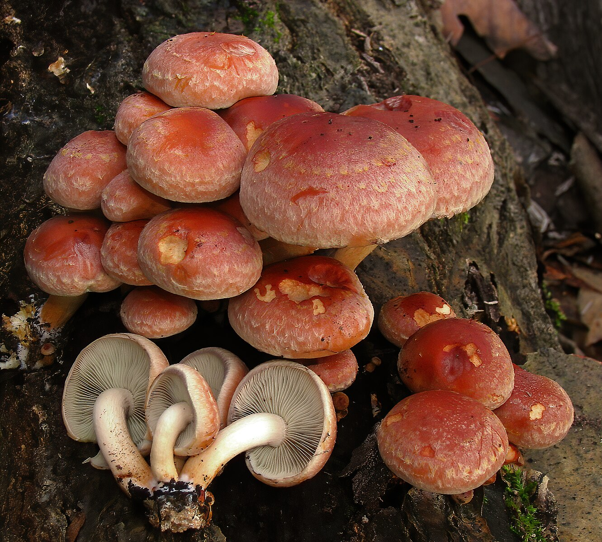

Ложный кирпично-красный опенок (ядовит)

Информация
- ШЛЯПКА: колокольчатая, затем округлая, мясистая, желто-красного цвета, более темная в центре.
- ПЛАСТИНКИ: прикрепленные. частые, желтоватого цвета, затем коричневого.
- НОЖКА: более или менее толстая, плотная, затем полая, желтоватого цвета, внизу коричневая.
- МЯКОТЬ: вначале белая, затем желтая.
- СПОРОВЫЙ ПОРОШОК: коричневого цвета.
- РАСТЕТ: группами на пнях и засохших деревьях с августа по сентябрь.